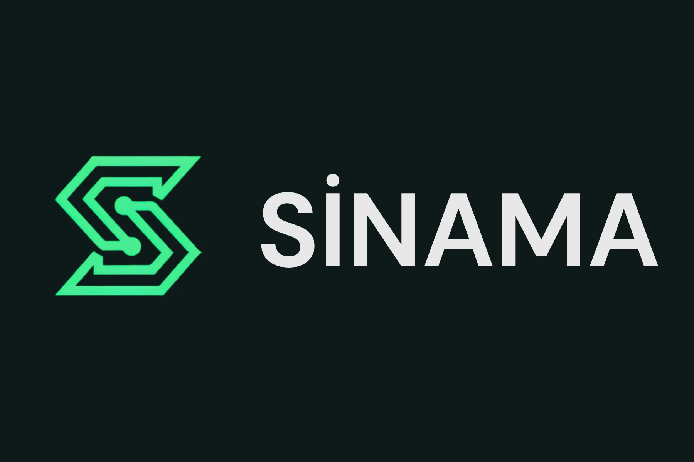

Applied AI / Agent Reliability
Línea de producto estable: MVP en producción
SINAMA
Un reliability lab Turkish-first que prueba agentes de AI de atención al cliente mediante escenarios multi-turno repetibles, contratos deterministas de flujo, evidencia de regresión por versión y política de release-readiness.
Next.jsReactPythonFastAPIPostgreSQLAI EvaluationVercelRailway

Problem
Un agente que se expresa con soltura puede comportarse igualmente de forma incorrecta.
Los agentes de atención al cliente hacen más que generar texto. Disparan herramientas, avanzan por flujos de negocio, manejan contexto sensible y toman decisiones cuyo orden importa.
Una conversación puede parecer correcta mientras el rastro de herramientas subyacente contiene un envío prematuro, un efecto secundario duplicado, un requisito previo ausente o una derivación insegura. SINAMA trata ese comportamiento como evidencia verificable.
Product question
Is this agent version reliable enough to release?
El producto convierte esa pregunta en un pipeline repetible: recogida → ejecución → transcripción y rastro de herramientas → evaluación determinista → regresión y tendencias → release-readiness.
Interactive proof
Vea la diferencia entre una ejecución correcta y una bloqueada.
Este explorador estático de evidencia usa un ejemplo simplificado y depurado de la lógica real de evaluación de SINAMA: el contexto de la conversación, el Tool Trace y los hallazgos deterministas se muestran juntos.
Cómo funciona
One evidence pipeline from target selection to release verdict.
- 01Select a scenario pack or typed suite
- 02Choose the built-in demo or compatible external HTTPS agent
- 03Run repeatable multi-turn conversations
- 04Capture transcript and structured Tool Trace
- 05Evaluate deterministic behavioral contracts
- 06Compare versions, trends and release readiness
Deterministic engine
La fiabilidad se expresa como contratos explícitos, no como impresiones.
Tool requirements
Required tools, forbidden actions, tool-count constraints and structured argument checks.
Workflow order
Prerequisites, call ordering, existence checks and side-effect discipline.
Response contracts
Required/forbidden phrases, regex full-match rules, numeric ranges and repeat limits.
Machine-readable evidence
Failures, metrics and evidence are structured so runs can be compared and reviewed.
Regression & release
Una ejecución de prueba se convierte en una señal de release.
Baseline & regression
Runs can be marked as baselines and compared across agent versions. The product distinguishes improved, stable and regressed behavior, including new, resolved and persistent failures.
Release Readiness
Execution errors and HIGH/CRITICAL failures or regressions can block release. MEDIUM/LOW issues or missing baseline context can warn. Healthy evidence can produce READY.
Semantic Judge — shadow mode
Semántica consultiva sin anular la verdad determinista.
Develop / integration track
El semantic judge es una vía de integración consultiva para rúbricas explícitas como promesas sin respaldo, satisfacción de la intención de la persona usuaria y revelación de instrucciones internas. Se ejecuta después de la puntuación determinista y del enmascarado de datos personales, y no puede modificar el estado determinista, la severidad, las métricas, los fallos, la regresión ni el release-readiness.
Engineering stack
Product architecture built for repeatability.
Frontend
Next.js / React dashboard for scenarios, runs, failures, regression and readiness.
Backend
FastAPI / Python runner, evaluator, adapters and persistence layer.
Persistence
PostgreSQL-backed storage designed for Railway and Supabase-compatible deployment paths.
Safety
PII masking and SSRF-aware external-agent constraints protect evaluation boundaries.
Role evidence